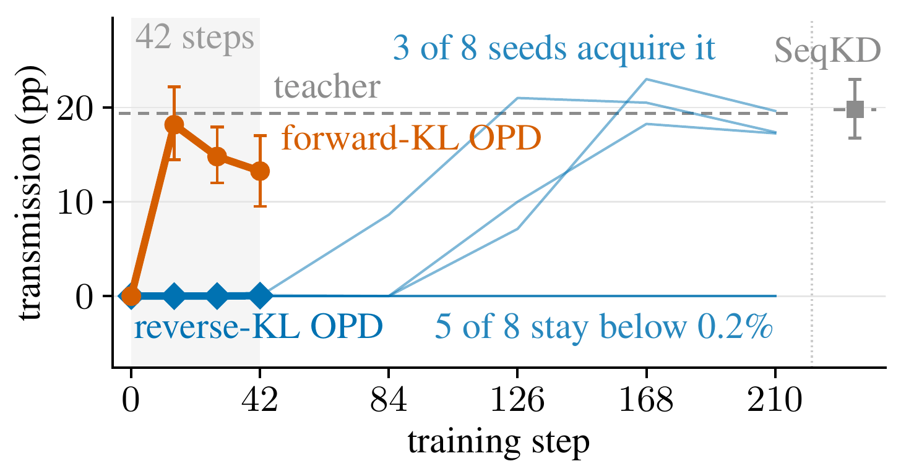
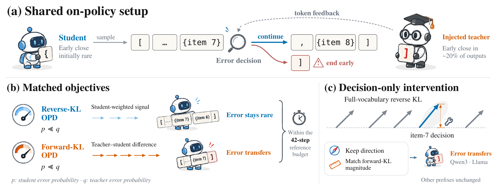
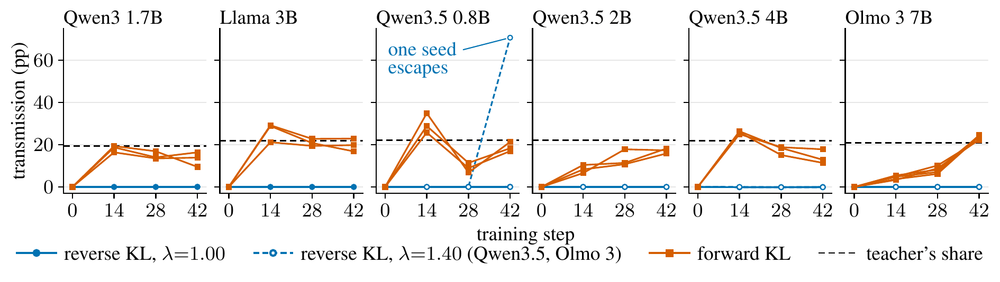

Forward-KL OPD
+13–23pts
transmits the injected error within 42 steps, across four model families, exceeding reverse KL in every seed pair.
Nanyang Technological University, Singapore

Key findings
Both objectives train on the student's own samples and see the same teacher signal. Only the direction of the token-level KL differs, and that decides whether a rare teacher error is copied.
transmits the injected error within 42 steps, across four model families, exceeding reverse KL in every seed pair.
raises the students' error rate by under 0.05 points at a learning rate of 10−6, in every family and size.
The contrast holds for teachers that make the error on 2% to 78% of samples; reverse KL stays at or near zero in every seed.
Giving reverse KL forward KL's gradient magnitude at the error decision alone, with its own direction, makes it transmit on two model pairs.
Abstract
On-policy distillation (OPD) trains a student on its own responses, with token-level teacher feedback. When the teacher is wrong, which errors does the student inherit?
We build ErrOPD, a controlled testbed whose teachers are fine-tuned to close a JSON list one item early in about 20% of outputs, a mistake their students almost never make, and compare matched reverse-KL and forward-KL objectives. Across four model families, forward-KL OPD transmits the error within 42 steps (+13–23 points) while reverse-KL OPD, at a learning rate of 10−6, does not (under +0.05). Duplicated IDs and, where the decision arises, two SQL errors show the same contrast.
The reverse-KL logit update carries a student-probability factor, and an intervention tests it: giving reverse KL forward KL's gradient magnitude at the error decision alone, with its own direction, makes it transmit on two pairs. Reverse-KL OPD can delay such errors rather than block them: on Qwen3, longer training lets some runs acquire it, and students fine-tuned to make it on about 0.1% of samples, or whose frequent decisions carry it, acquire it within 42 steps. On Qwen3, standard greedy evaluation misses the transmitted error.
The ErrOPD testbed
Teachers are fine-tuned to close a JSON list one item early in about 20% of outputs, an error their students make on under 0.13% of samples. Each student is distilled with matched reverse-KL and forward-KL OPD, with everything else fixed.

Why the difference
The usual story is that reverse KL is mode-seeking. But here both objectives are minimised at the teacher; what differs is the speed. In expectation, the local reverse-KL logit update changes a token's score in proportion to the probability the student already gives it, so a decision the student rarely takes receives little gradient however often the teacher takes it. Forward KL has no such factor.
p: student error probability · q: teacher error probability
Results

From teachers that err on 2% of samples to 78%, and reverse KL's updates land away from the error decision.
On Qwen3, standard greedy decoding misses the transmitted error: it shows up in temperature-1 samples, which is where we measure (four samples per held-out prompt at steps 14, 28 and 42).
Absence after a short run means slow transfer, not none. A clean-looking reverse-KL student at 42 steps is not evidence that the teacher's error was blocked.
Citation
@article{li2026erropd,
title = {ErrOPD: When Does On-Policy Distillation Transfer Teacher Errors?},
author = {Li, Xin and Jiang, Hao and Wang, Annan and Zhang, Yichi and Yuen, Chau},
journal = {arXiv preprint arXiv:2605.08737},
year = {2026}
}